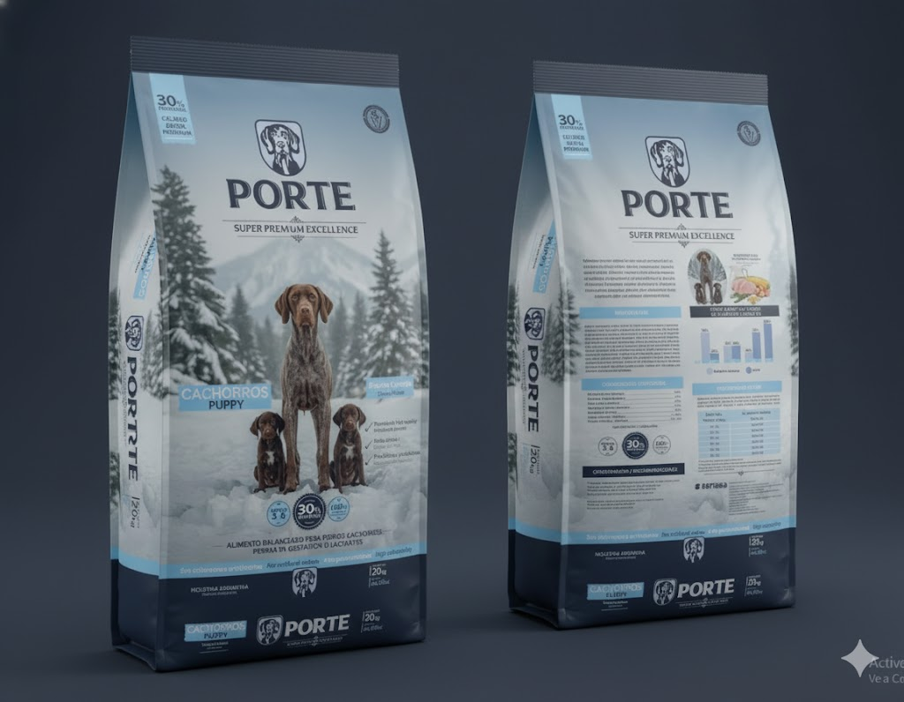

Alimentación
Guía para elegir el mejor alimento balanceado para tu mascota
Elegir el alimento balanceado correcto es una de las decisiones más importantes para la salud a largo plazo de tu perro o gato. El mercado ofrece miles de opciones, desde económicas hasta súper premium, y saber qué buscar en la etiqueta es clave para diferenciar la calidad nutricional.
1. El primer ingrediente es la clave
Como aprendimos en el tip anterior, la lista de ingredientes se ordena por peso. Por lo tanto, el primer ingrediente debe ser una fuente de proteína animal clara y de alta calidad.
Busca términos como "Carne de pollo", "Carne magra de res" o "Salmón". Ten cuidado con ingredientes genéricos como "Harina de subproductos" o si el primer ingrediente es un cereal (maíz, trigo).
Aquí es donde los alimentos de categoría **Super Premium** marcan la diferencia. Estas fórmulas, como las de Porte, están diseñadas para que la proteína animal de alta digestibilidad sea la base de la nutrición, asegurando un perfil de aminoácidos óptimo para músculos fuertes.
2. Revisa el Análisis Garantizado (pero con contexto)
El Análisis Garantizado te dirá los porcentajes mínimos de proteína y grasa, y los máximos de fibra y humedad. Si bien un 28% de proteína (como en la fórmula Super Premium Excellence de Porte) es excelente, recuerda que la *calidad* de esa proteína (definida en los ingredientes) es lo que realmente importa.
No te dejes llevar solo por el número más alto; un alimento puede tener mucha proteína, pero si es de baja calidad (ej. plumas o picos hidrolizados), tu mascota no podrá aprovecharla.
3. Busca ingredientes funcionales
Un buen alimento no solo nutre, también previene. Los alimentos de alta gama suelen incluir ingredientes funcionales que ofrecen beneficios adicionales:
- Prebióticos (MOS y FOS): Para una flora intestinal saludable y mejor digestión.
- Omega 3 y 6: Para una piel sana y un pelaje brillante.
- Glucosamina y Condroitina: Para la protección de las articulaciones, especialmente en razas grandes o perros senior.
4. Elige según la etapa de vida y tamaño
Las necesidades de un cachorro no son las mismas que las de un adulto o un senior. Un cachorro necesita más calorías y proteínas para su crecimiento (como la fórmula Porte SPE Cachorros), mientras que un adulto puede requerir un balance enfocado en el mantenimiento.
Asegúrate de que el envase especifique que es "completo y balanceado" para la etapa de vida correcta. Si dice "para todas las etapas de la vida", suele estar formulado para cachorros, pudiendo ser demasiado calórico para un perro adulto sedentario.
5. El precio como indicador de calidad
Si bien lo más caro no es *automáticamente* lo mejor, en los alimentos balanceados el precio suele reflejar la calidad de los ingredientes. Producir un alimento con carne fresca, granos nobles y aditivos funcionales es más costoso que usar subproductos y cereales baratos.
Invertir en un alimento Super Premium puede parecer más caro al principio, pero a menudo se traduce en menos visitas al veterinario, mejor salud digestiva y mayor vitalidad para tu mascota a largo plazo.